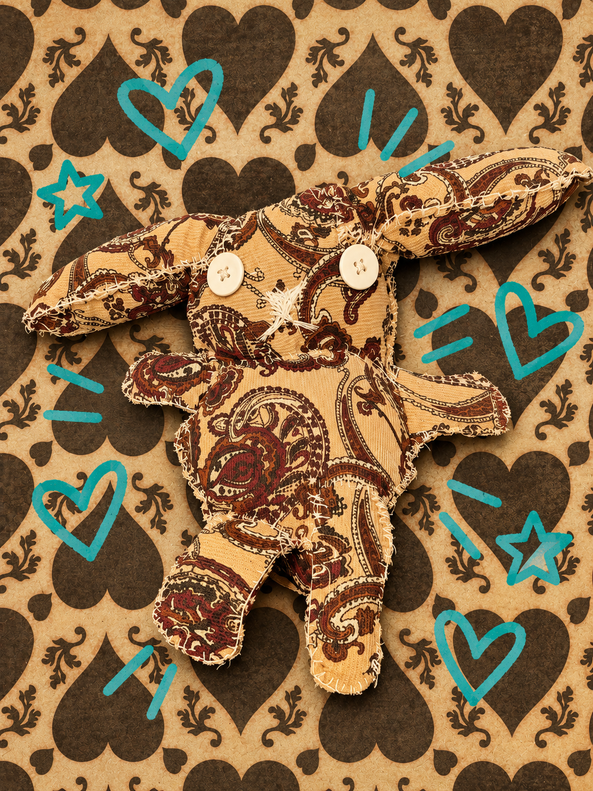

♡ About Carrot
Carrot is a very ditzy little bunny who only has
one thing on her mind: FOOD!
She's a major glutton and will eat just about
anything she can get her paws on. She's
constantly thinking about her next meal,
even when she's already eating something.
Carrot isn't exactly the brightest bunny in
the bunch. She gets distracted easily,
forgets what she's doing, and sometimes
walks into a room just to forget why she
went there.
But somehow, she never forgets where
the snacks are hidden.
She's a little clueless, extremely hungry,
and completely lovable. ♡
✦ Her Personality
- Extremely gluttonous
- Ditzy and scatterbrained
- Easily distracted, especially by food
- Goofy and unintentionally funny
- Always hungry
- Sweet but a little clueless
♡ CARROTS ♡
Carrots. Carrots. And more carrots.
CURRENT THOUGHT: CARROT.